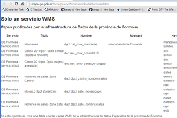

Ejemplos para un solo servicio WMS
-

Una tabla con las capas de un WMS de IDERA
En este ejemplo se muestra el widget tablaDeCapasWMS utilizando solo el servicio WMS de la IDE Formosa.
-

Un mapa con una capa de un WMS
En este ejemplo se muestra el widget mapa utilizando solo el servicio WMS de la IDE Formosa.
Ejemplos para servicios de la IDERA en general
-

Una tabla con la descripción de los servicios WMS de IDERA
En este ejemplo se muestra el widget tablaDeServiciosWMS